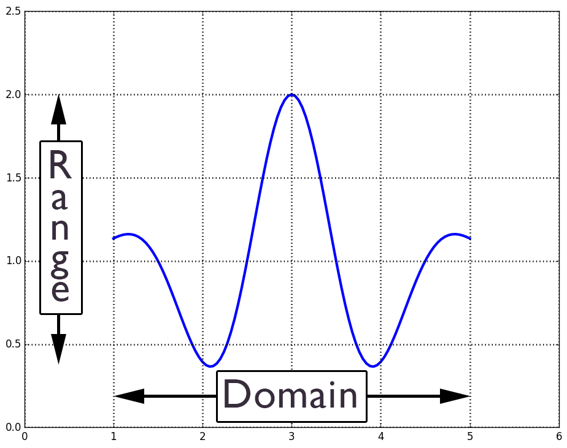
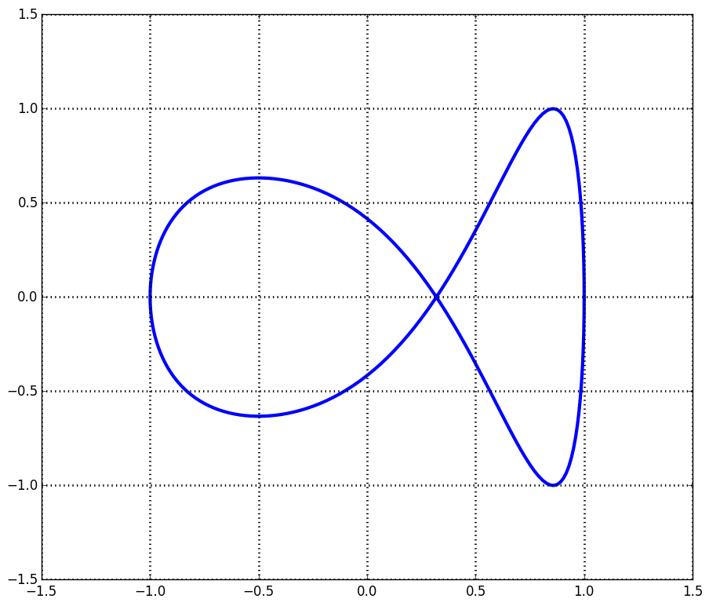
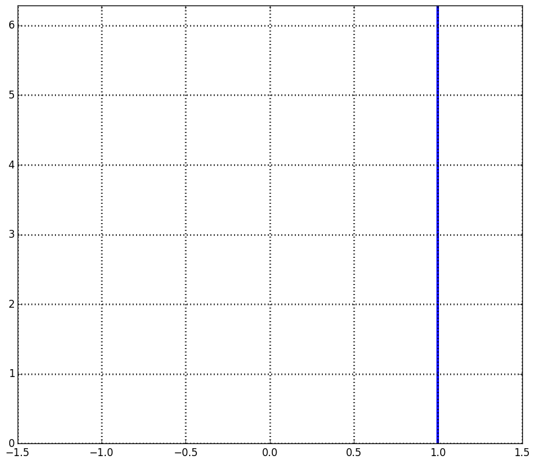
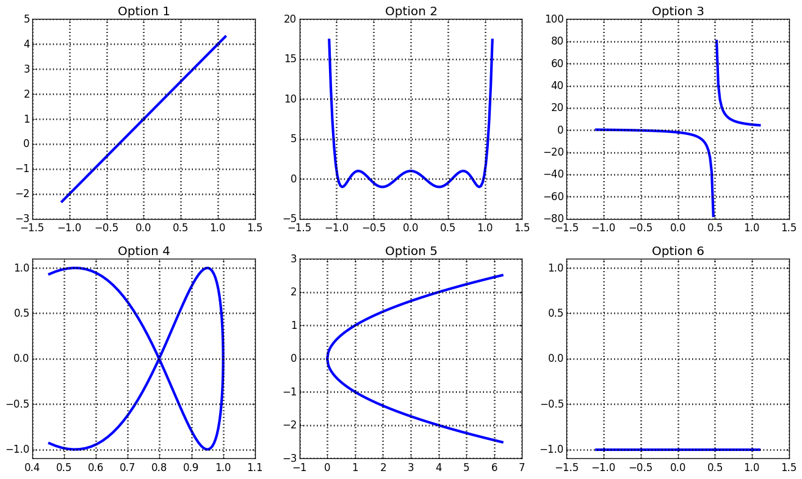
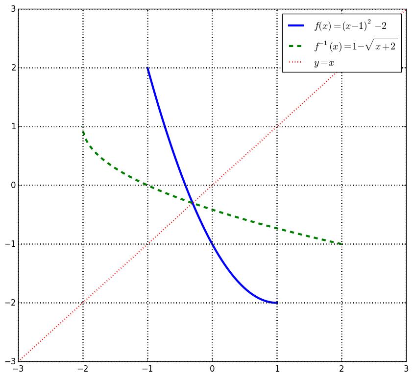

| « 3.8 | up | 4.2 » |
4.1 — One-to-one and Inverse Functions
Function Definition and Vertical Line Test
A function creates a mapping between sets, called the function's domain to the function's range. Each input value must only one output value.
Given the plot of some curve, we can test whether or not it's a function using the vertical line test.This test says that any vertical line we draw must only pass through the graph once.
Use the vertical line test to determine if the following graph is the graph of a function.

It is not a function.
Use the vertical line test to determine if the following graph is the graph of a function.

It is not a function.
One-to-one Functions
A one-to-one function which has distinct output values when the input values are distinct. This says that for any two input values, $a$ and $b$, if $a \neq b$, then $f(a) \neq f(b)$.It turns out this is logically equivalent to saying: if $f(a) = f(b)$, then $a=b$.
Show that $f(x) = \frac{1}{x}$ is one-to-one using the definition.
\begin{align*}
f(a) &= f(b) \\
\frac{1}{a} &= \frac{1}{b} \\
a &= b
\end{align*}
Show that $f(x) = \frac{1}{x^2}$ is not one-to-one using the definition.
\begin{align*}
f(a) &= f(b) \\
\frac{1}{a^2} &= \frac{1}{b^2} \\
a^2 &= b^2 \\
a^2 - b^2 &= 0 \\
(a + b)(a - b) &= 0
\end{align*}
This means either $a+b=0$ or $a-b=0$, so either $a=-b$ or $a=b$. Since $a=-b$ is a valid solution, the function $f$ is not one-to-one.
Is $f(x) = \frac{3x+2}{2x-1}$ one-to-one? Use the definition.
Yes.
The Horizontal Line Test
The horizontal line test states that a function is one-to-one if and only if any horizontal line we draw the graph through the graph of the function, passes through it only once. Hence, to be a one-to-one function, the graph must pass both the vertical and horizontal line test.
Select all the graphs of one-to-one functions.

Options 1 and 3.
Sketch the graph of $f(x) = x^3 - 2x^2 + x$. Is it one-to-one?
No.
Inverse Functions
If $f$ is a one-to-one function, then there is an inverse function denoted $f^{-1}$ called the inverse function for $f$. Furthermore, we have the following properties:- $y=f(x)$ if and only if $x = f^{-1}(y)$
- domain$(f)$ = range$(f^{-1})$
- range$(f)$ = domain$(f^{-1})$
- If $x$ is in domain$(f)$, then $f^{-1}(f(x)) = x$
- If $x$ is in domain$(f^{-1})$, then $f(f^{-1}(x)) = x$
Find the domain and range of the inverse function of $f(x) = 4x-2$ on $[-3,2]$.
domain$(f^{-1}) = [-14,6]$
range$(f^{-1}) = [-3,2]$
range$(f^{-1}) = [-3,2]$
Find the domain and range of the inverse function of $f(x) = a(x-1)^2-2$ on $(-\infty,1)$ for $a \gt 0$.
domain$(f^{-1}) = (-2,\infty)$
range$(f^{-1}) = (-\infty, 1)$
range$(f^{-1}) = (-\infty, 1)$
Plotting the Inverse Functions
Remember that if $(x,y)$ is a point on the graph of $f$, then $(y,x)$ is a point on the graph of $f^{-1}$.Given the graph of $f$, the graph of $f^{-1}$ is a reflection of the graph of $f$ across the line $y=x$.

Finding the Inverse Function
To find the inverse function $y=f^{-1}(x)$ for $y=f(x)$, do the following:- Swap $x$ and $y$ in the expression $y=f(x)$.
- Solve for $y$. This is the inverse function.
Find the inverse function for $y=4x-2$ defined on $[-3,2]$.
$f^{-1}(x) = \frac{1}{4}x + \frac{1}{2}$ on $[-14,6]$.
Find the inverse function for $y=\frac{3x-2}{1-x}$.
$f^{-1}(x) = \frac{x+2}{x+3}$
Find the inverse function of $f(x) = a(x-1)^2-2$ on $(-\infty,1)$ for $a \gt 0$.
$f^{-1}(x) = 1-\sqrt{\frac{x+2}{a}}$ on $(-2,\infty)$